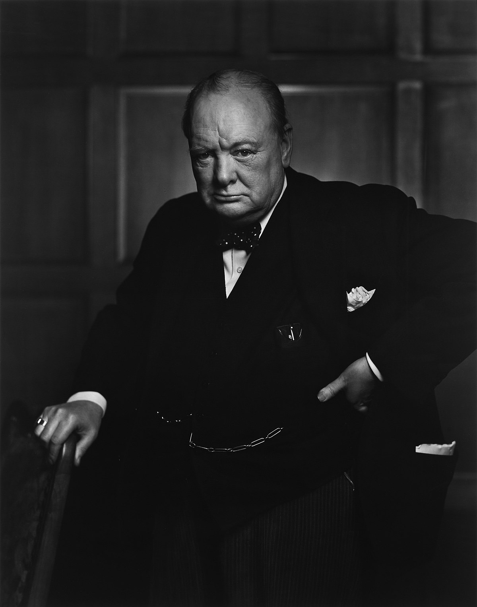

Hacked in HTML by Clint Yoo
"Democracy is the worst form of government – except for all the others that have been tried." - Winston Churchill
If your country holds elections it’s almost certainly a representative democracy. That means it’s a system of government in which citizens elect representatives who propose and vote on legislation or policy initiatives on their behalf. It’s a form of indirect democracy, as opposed to a direct democracy, in which people vote directly on policy initiatives. Representative democracy gives power to representatives who are elected by citizens. As you may know, political parties have become an important element of representative democracy. They give us a broad-stroke sense of what a candidate stands for based on which party he or she belongs to. Although we still vote on people when we head to the polls, in reality we are really voting for which political party – and which platform of policy ideas – we want to represent us.